Автоматический перевод
Эта статья была автоматически переведена с оригинальной английской версии.
Контекстная инженерия для AI-агентов: окна контекста, память, инструменты и guardrails
Кратко
Контекстная инженерия — это конвейер, который решает, что модель видит в момент принятия решения: инструкции, примеры, знания, память, навыки, инструменты, guardrails. Большинство production-агентов либо работают, либо ломаются именно на этом слое. Ниже — схема, к которой я постоянно возвращаюсь, с паттернами, которые сам реально использую.
Один и тот же агент может блестяще пройти 30-минутное демо и развалиться на третий день в production. Почти всегда причина не в модели, а в том, какой контекст был у нее в момент неверного решения. Устаревшая память. Документ, который уже неактуален. Дрейф в описании инструмента. Размытая инструкция.
Контекстная инженерия — это то, что вы делаете, чтобы этого не произошло: намеренно, с учетом бюджета, проектируете то, что модель видит перед каждым решением. В этой статье я разберу паттерны, которые использую сам.
Почему контекстная инженерия важна для AI-агентов
Агент клиентской поддержки работает три недели и обрабатывает 200 тикетов. А потом начинает галлюцинировать детали продукта, путать клиентов и вызывать не те API. Модель не стала хуже. Хуже стал контекст.
В 2025 году изменились четыре вещи, из-за которых это стало болезненнее, чем раньше. Агенты перестали быть чат-ботами и начали выполнять действия, а значит, одно неверное решение из-за плохого контекста теперь может каскадно испортить план из десяти шагов, а не просто породить один плохой ответ. Централизованная память и стандарты вроде MCP позволяют безопасно подгружать персональный контекст, но только если этот слой спроектирован правильно — без governance вы либо утечете PII, либо переполните окно. Hybrid retrieval, reranking и graph-aware retrieval тоже дозрели, что снижает галлюцинации и расход токенов, если вы действительно маршрутизируете запросы в правильную стратегию. И большинство agentic-пилотов, которые я вижу, буксуют не на качестве модели, а на дизайне контекста и governance. Именно продуманный контекстный слой позволяет им сдвинуться с места.
Ключевые понятия для новичков
Несколько терминов, которые будут встречаться по всей статье:
- Окно контекста: рабочая память модели. Максимальный объем текста (в токенах), который она может учитывать в рамках одного решения. Превысите лимит — модель либо упадет, либо забудет начало.
- Токены: единица, на которую разбивается текст. Грубо говоря, 1,000 токенов — это 750 слов.
- Бюджет внимания: языковые модели учитывают каждую пару токенов, поэтому для n токенов существует n² связей. По мере роста контекста этот бюджет размазывается, и токены в середине проигрывают началу и концу.
- Embeddings: численные представления текста. Они позволяют искать по смыслу, так что запрос по слову "dog" может найти "puppy".
- JSON Schema: стандартный способ описать форму JSON-данных. Используется, чтобы заставить модель выдавать конкретные поля, например
{"answer": "...", "citations": [...]}. - MCP (Model Context Protocol): открытый стандарт, который позволяет AI-моделям работать с внешними данными и инструментами через единый интерфейс. Думайте о нем как об USB-порте для подключения агента к локальным файлам, базам данных или Slack.
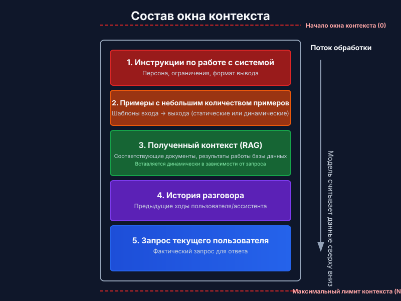
Что такое контекстный слой?
Это конвейер плюс policy, который выбирает и структурирует входы на каждом шаге, применяет controls (формат, безопасность, policy) и подает модели ровно столько контекста, сколько нужно, и ровно тогда, когда нужно.
Думайте о нем как о сборочной линии, которая подготавливает ровно то, что модели нужно для хорошего решения.
Контекст — конечный ресурс. У моделей, как и у людей с ограниченной рабочей памятью, есть бюджет внимания, который истощается по мере роста контекста. Каждый новый токен тратит часть этого бюджета. Инженерная задача — найти минимальный набор высокосигнальных токенов, который приведет к нужному ответу.
Единой канонической декомпозиции нет — разные команды поставляют разные стеки. Я использую вот такую:
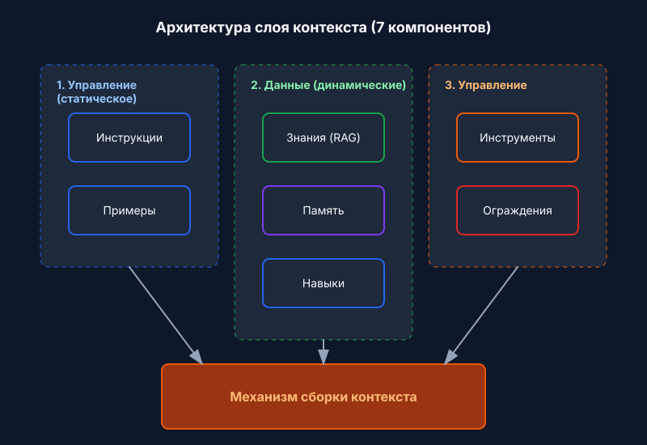
1) Инструкции
Долговечный контракт на поведение: роль, тон, ограничения, схема вывода, цели оценки. Современные модели уважают иерархию инструкций (system > developer > user), поэтому используйте ее явно, а не запихивайте все в один блок.
К инструкциям стоит обращаться, когда нужен стабильный вывод (отчеты, SQL, API-вызовы, JSON) или когда нужно enforce policy — редактировать PII, отказывать в запросах на неподдерживаемые вещи, никогда не включать внутренние URL. Паттерны, которые реально работают, очевидны: держите policy-блоки отдельно от пользовательской задачи, используйте JSON Schema для детерминированного downstream-кода и разделяйте system-, developer- и user-сообщения, чтобы модель понимала, из какого источника идет каждая инструкция.
Простой пример policy-блока:
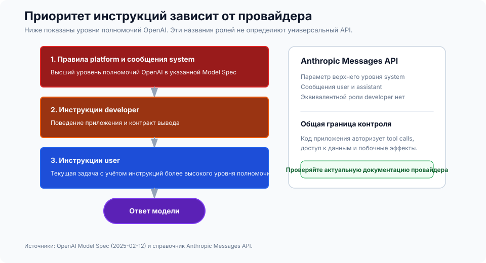
SYSTEM RULES
- Role: support assistant for ACME.
- Always output valid JSON per AnswerSchema.
- If a request needs account data, ask for the account ID.
- Never include secrets or internal URLs.
Рассуждение, управляемое схемой (SGR)
Самое полезное улучшение идеи «дать модели инструкции» — сделать эти инструкции структурными. Управляйте агентом через JSON Schema для плана, аргументов инструмента, промежуточных результатов и финального ответа. На каждом шаге модель выдает и потребляет JSON, а ваш код валидирует его до любых дальнейших действий. Это снижает неоднозначность, делает ретраи детерминированными и повышает безопасность, потому что типы и обязательные поля enforce'ятся на всем цикле.
Поток короткий. Определите схемы для Plan, ToolArgs, StepResult и FinalAnswer. На каждом шаге модель должна вернуть JSON, соответствующий одной из них. Ваш код валидирует. Если валидация не проходит, сделайте одну автоматическую попытку исправления (например, заполните отсутствующие обязательные поля разумными значениями по умолчанию). Если исправление не удалось — отказывайте и логируйте.
Конкретно: вместо того чтобы модель говорила «Я поищу тикеты клиента», она выдает
{
"action": "call_tool",
"tool": "search_tickets",
"args": { "customer_id": "A-123", "limit": 10 },
"expected_schema": "TicketList"
}
и ваш код валидирует args по схеме инструмента до вызова API.
2) Примеры
Несколько коротких пар input-output, которые показывают точный формат, тон и шаги, которым модель должна следовать. Используйте примеры, когда нужен конкретный шаблон (таблицы, JSON, SQL, API-вызовы) или когда нужна доменно-специфичная формулировка и стабильный тон.
Есть несколько правил, которые я постоянно заново усваиваю. В каноническом демо показывайте точную целевую структуру, а не ее пересказ. Сочетайте хорошие примеры с плохими — контраст между типичной ошибкой и желаемым результатом учит лучше, чем два корректных ответа. Используйте JSON Schema вместе с двумя-тремя короткими демо, а не с одним длинным. И держите примеры короткими: много небольших сфокусированных демо почти всегда лучше одного разросшегося примера.
3) Знания
Grounding модели внешними фактами: vector- и keyword-retrieval, reranking, graph-запросы, web fetches, enterprise-источники. Это нужно, когда модель не может знать ответ из своих весов — свежие факты, приватные факты или все, что требует цитирования.
Стек retrieval, который стоит брать по умолчанию, — hybrid (BM25 plus dense) с reranker сверху, чтобы сократить счет за токены. Используйте graph-aware retrieval (GraphRAG), когда ответ требует переходов между документами, а adaptive RAG — когда один тип запроса не покрывает все: иногда retrieval не нужен вовсе, иногда достаточно одного прохода, а иногда нужен итеративный цикл.
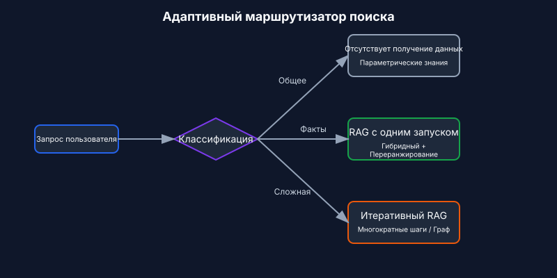
Параметры, которые реально двигают качество, скромнее, чем можно подумать по литературе. Разбивайте по семантическим границам (абзацы, секции), а не по фиксированному размеру — chunking это то единственное решение, которое на реальных документах чаще всего определяет качество retrieval. Для hybrid retrieval начните с top-k 10–20, затем rerank до 3–5. Для разнообразия используйте MMR с λ около 0.7 как дефолт. И всегда включайте в вывод ссылки на источники и прямые цитаты — не потому, что без этого модель обязательно начнет галлюцинировать, а потому что именно это делает ответ проверяемым.
4) Память
Долговременный контекст через ходы диалога и сессии. Краткосрочная память хранит состояние разговора. Долгосрочная память — факты о пользователе и приложении. Эпизодическая память — события. Семантическая память — сущности. Память нужна, когда вы хотите персонализацию и непрерывность либо когда несколько агентов координируются в течение дней или недель.
Паттерны, которые выдерживают production: memory по сущностям (имена, ID, предпочтения) с явными политиками истечения; scoped retrieval из долгосрочного хранилища на базе векторов, key-value или графа; и связка памяти со сжатием, чтобы при разрастании краткосрочной памяти она суммаризовалась, а не тупо обрезалась. Суммаризация разобрана в Стратегии сжатия контекста [7].
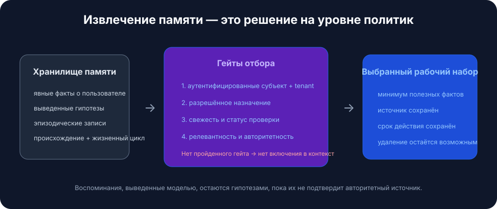
Policy истечения, которую я использую по умолчанию:
- Предпочтения: 365 дней.
- Эпизодические события: 90 дней.
- Краткосрочное состояние: очищать в конце сессии.
- Сущности: без истечения, но с обязательной периодической валидацией.
5) Навыки
Композиционная доменная экспертиза, которую агенты находят и подгружают по требованию. Фреймворк Anthropic Agent Skills — референсный дизайн для захвата процедурных знаний и шаринга их между агентами.
Создать навык для агента — это как собрать onboarding guide для нового сотрудника. — Anthropic Engineering Blog
Навыки нужны, когда вам требуется доменно-специфичная экспертиза (манипуляции с PDF, git, анализ данных), когда вы хотите переиспользуемые процедуры между агентами или организациями, либо когда хотите специализировать агента без хардкода поведения в system prompt.
Что такое навык?
Навык — это организованная папка с инструкциями, скриптами и ресурсами, которую агент может обнаружить и подгрузить при необходимости:
- Файл
SKILL.mdс именем, описанием (в YAML frontmatter) и инструкциями навыка. - Дополнительные файлы — справочные материалы, шаблоны, — которые навык может подтягивать.
- Код: Python или другие исполняемые файлы, которые агент может запускать как инструменты.
Паттерн навыков: progressive disclosure
Принцип, который позволяет навыкам масштабироваться, — progressive disclosure: загружать информацию только по мере необходимости. (Общий вариант этого принципа см. ниже в Принцип progressive disclosure.) При запуске в контексте находятся только имена и описания навыков — этого достаточно, чтобы агент понимал, что доступно. Полный SKILL.md загружается только при активации навыка. Более глубокие связанные файлы загружаются только тогда, когда они реально нужны активированному навыку.
Это означает, что содержимое навыков фактически не ограничено. Агент не платит контекстом за то, чем не пользуется.
┌─────────────────────────────────────────────────────────┐
│ Context Window │
├─────────────────────────────────────────────────────────┤
│ System Prompt │
│ ├── Core instructions │
│ └── Skill metadata (name + description only) │
│ • pdf: "Manipulate PDF documents" │
│ • git: "Advanced git operations" │
│ • context-compression: "Manage long sessions" │
├─────────────────────────────────────────────────────────┤
│ [User triggers task requiring PDF skill] │
│ │
│ → Agent reads pdf/SKILL.md into context │
│ → Agent reads pdf/forms.md (only if filling forms) │
│ → Agent executes pdf/extract_fields.py (without loading)│
└─────────────────────────────────────────────────────────┘
Лучшие практики для навыков
Рекомендации Anthropic сводятся к четырем вещам. Начинайте с evaluation: прогоняйте агента по репрезентативным задачам, находите пробелы и пишите навыки, чтобы их закрыть. Структурируйте для масштаба: разбивайте большой SKILL.md на отдельные файлы и держите разные пути раздельно, если их контексты взаимоисключающие. Смотрите, как агент использует ваши навыки, и итеративно улучшайте имена и описания, пока точность срабатывания не станет высокой. И дайте агенту помочь: попросите Claude оформлять успешные подходы в переиспользуемое содержимое навыков.
Соображения безопасности
Навыки по определению вводят уязвимости — они дают агенту новые возможности через инструкции и код. Устанавливайте их только из доверенных источников. Перед использованием проводите аудит, включая вложенные файлы, зависимости кода и любые сетевые соединения. Особенно внимательно проверяйте инструкции, которые подключают навык к внешним сервисам, потому что именно там обычно и начинается exfiltration.
6) Инструменты
Function calls, которые получают данные или выполняют действия: API, базы данных, поиск, файловые операции, computer use. Инструменты нужны, когда вам нужны детерминированные side effects и точность данных, либо когда вы оркестрируете циклы plan-call-verify-continue.
По умолчанию я использую такие паттерны: tool-first planning с post-call validators, structured outputs между шагами и явные fallback'и при сбоях инструмента (retry, затем degrade, затем human-in-loop).
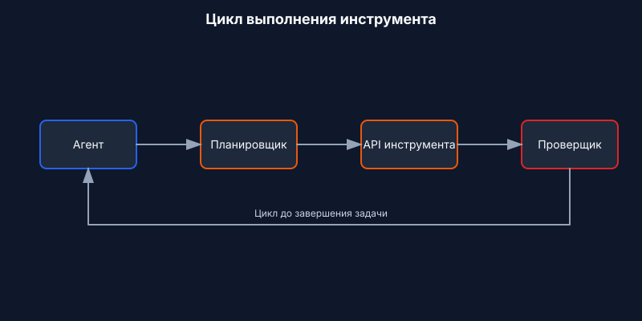
Три понятия, которые важно понимать точно. Idempotent значит, что повтор безопасен и не вызывает side effects (GET — да, POST или DELETE — нет). Postconditions — это проверки после каждого вызова: результат не пустой, status равен "ok", JSON валиден. Цепочка fallback — это порядок действий, когда что-то идет не так: retry, затем graceful degradation, затем эскалация человеку.
Заметка про MCP
MCP становится стандартом того, как агенты подключаются к инструментам и данным [6]. Вместо написания кастомного API-wrapper для каждого сервиса вы поднимаете отдельный MCP server для каждого, а агент автоматически обнаруживает доступные инструменты и ресурсы.
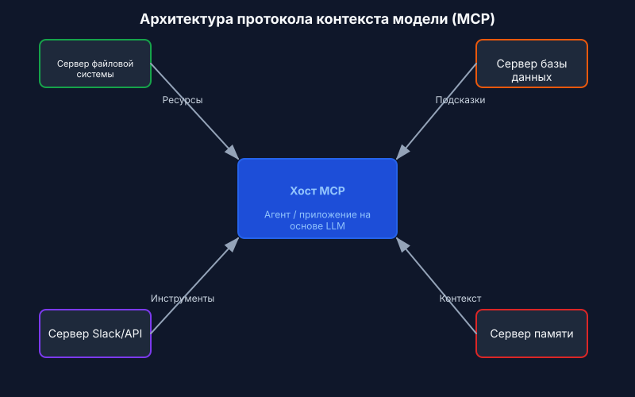
7) Guardrails
Валидация входа и выхода, safety-фильтры, защита от jailbreak, enforcement схем, content policy. Guardrails нужны, когда вам важны compliance или целостность бренда, а также когда вам нужны типизированные корректные ответы и безопасное поведение.
Форма, которая выдерживает production: программируемые rails (policy-правила плюс действия), schema- и semantic-validators (типы, regex, evals) и централизованная policy с observability (dashboards, red-teaming).
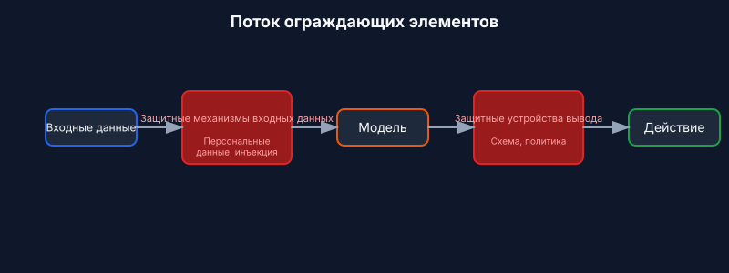
Решение «исправлять или отказывать» — это то место, где команды чаще всего ошибаются. Нарушения схемы получают одну автоматическую попытку исправления; если не сработало — понятный отказ. Нарушения policy вообще не должны проходить через попытку исправления — отказывайте сразу и предлагайте безопасную альтернативу.
Четыре типа guardrails покрывают большинство production-сценариев. Input guards ловят PII, prompt injection и токсичность до того, как это увидит модель. Output guards enforce'ят схему, content policy и фактическую согласованность. Tool guards обрабатывают rate limiting, permission checks и пороги стоимости. Memory guards редактируют PII перед сохранением и enforce'ят сроки хранения.
Конкретный пример: support-бот отвечает на тикет
Вот что собирает контекстный слой, когда клиент спрашивает: «Почему мой API key не работает?»:
- Инструкции: роль — helpful support assistant для ACME, ссылаться на источники, вернуть JSON
{answer, sources, next_steps}. - Примеры: две короткие пары Q→A, показывающие тон и форму JSON: одна про API keys, одна про billing.
- Знания: поиск по help center и product runbooks по запросу "API key troubleshooting"; включить релевантные цитаты.
- Память: имя клиента "Sam", account ID "A-123", тариф "Pro", последнее взаимодействие — "API key created 3 days ago".
- Навыки: загрузить навык
ticket-handlingс процедурами troubleshooting, политиками эскалации и шаблонами решения. - Инструменты:
search_tickets(customer_id),check_api_key_status(key),create_issue(description). - Guardrails: редактировать значения API key в выводе; если схема невалидна — один раз исправить; если нарушена policy (например, просят удалить production-данные) — вежливо отказать.
Модель получает весь этот структурированный контекст, генерирует ответ, а guardrails валидируют его до отправки клиенту.
Глубокое погружение в основы контекста
Прежде чем паттерны станут понятны, нужно понять анатомию.
Анатомия контекста
У контекста есть несколько разных компонентов, и у каждого — свои характеристики и ограничения.
System prompts задают идентичность агента, ограничения и поведенческие правила. Они загружаются один раз в начале сессии и сохраняются на протяжении разговора. Тонкость здесь в выборе правильного уровня абстракции: достаточно конкретно, чтобы реально направлять поведение, но достаточно гибко, чтобы оставлять пространство для суждения. Слишком низкий уровень — и вы поставляете хрупкие захардкоженные правила. Слишком высокий — и модель не получает конкретного сигнала к действию.
Организуйте prompts по отдельным секциям с помощью XML-тегов или Markdown-заголовков:
<BACKGROUND_INFORMATION>
You are a Python expert helping a development team.
Current project: Data processing pipeline in Python 3.9+
</BACKGROUND_INFORMATION>
<INSTRUCTIONS>
- Write clean, idiomatic Python code
- Include type hints for function signatures
- Add docstrings for public functions
</INSTRUCTIONS>
<TOOL_GUIDANCE>
Use bash for shell operations, python for code tasks.
File operations should use pathlib for cross-platform compatibility.
</TOOL_GUIDANCE>
Определения инструментов задают действия, которые агент может выполнять. У каждого инструмента есть имя, описание, параметры и формат возврата. Именно описания реально управляют поведением. Плохие описания заставляют агента гадать; хорошие включают контекст использования, примеры и разумные значения по умолчанию. Принцип консолидации такой: если инженер-человек не может однозначно сказать, какой инструмент здесь нужен, агент тем более не сможет. Это сигнал к объединению или переименованию.
Извлеченные документы подтягивают в контекст релевантное содержимое во время выполнения вместо предварительной загрузки всего подряд. Подход just-in-time держит под рукой только легковесные идентификаторы — file paths, сохраненные запросы, web links — и подгружает реальные данные только при необходимости.
История сообщений — это разговор между пользователем и агентом, включая предыдущие запросы, ответы и рассуждения. В долгоживущих задачах именно она может начать доминировать в окне. Она также играет роль scratchpad-памяти, где агенты отслеживают прогресс и состояние задачи.
Выводы инструментов — это результаты действий агента: содержимое файлов, результаты поиска, вывод команд, ответы API. В типичных траекториях агента наблюдения могут занимать более 80% всего контекста [4]. Именно это давление и приводит к таким техникам, как observation masking и compaction.
Окна контекста и механика внимания
Языковые модели вычисляют внимание как попарные отношения между каждой парой токенов. Для n токенов это n² связей. По мере роста контекста способность модели удерживать эти отношения истончается.
Кроме того, модели получают свои паттерны внимания из обучающих данных, а эти данные в основном состоят из более коротких последовательностей. Поэтому у модели сравнительно мало опыта с зависимостями, растянутыми на весь контекст. В итоге бюджет внимания истощается по мере роста контекста.
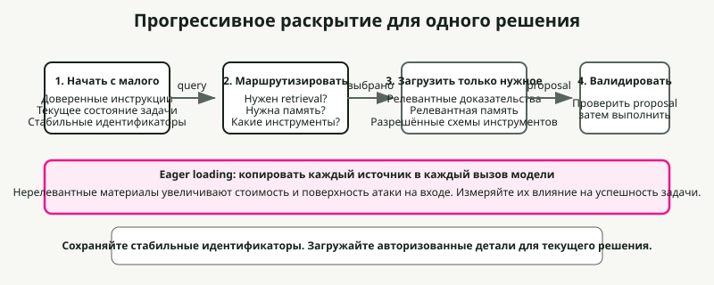
Принцип progressive disclosure
Progressive disclosure эффективно управляет контекстом, загружая информацию только по мере необходимости. При старте агенты загружают только имена и описания навыков — достаточно, чтобы понять, когда навык может пригодиться. Полное содержимое загружается только при активации для конкретных задач.
# Instead of loading all documentation at once:
# Step 1: Load summary
docs/api_summary.md # Lightweight overview
# Step 2: Load specific section as needed
docs/api/endpoints.md # Only when API calls needed
docs/api/authentication.md # Only when auth context needed
Качество контекста против количества
Предположение, что большие окна контекста решают проблему памяти, было эмпирически опровергнуто. Контекстная инженерия — это поиск минимально возможного набора высокосигнальных токенов.
Несколько факторов подталкивают к эффективности. Стоимость обработки растет непропорционально длине контекста — не просто вдвое при удвоении числа токенов, а экспоненциально по времени и вычислениям. Производительность модели ухудшается после определенных длин контекста, даже если окно технически поддерживает больше. И длинные входы все равно остаются дорогими даже при prefix caching.
Главный принцип — информативность важнее исчерпывающего покрытия. Включайте только то, что влияет на текущее решение, и исключайте все остальное.
Паттерны деградации контекста
Языковые модели демонстрируют предсказуемые паттерны деградации по мере роста контекста. Знание этих паттернов позволяет диагностировать сбои и проектировать устойчивые системы.
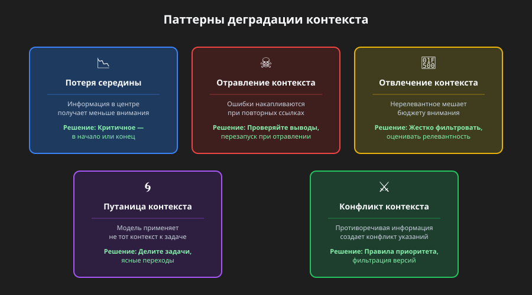
Феномен lost-in-middle
Самый хорошо задокументированный паттерн деградации — это "lost-in-middle", когда модели демонстрируют U-образные кривые внимания [1]. Информация в начале и в конце контекста получает надежное внимание; информация в середине страдает от падения recall accuracy на 10–40%.
Механизм вполне конкретный. Модели выделяют огромное внимание первому токену (часто BOS token), чтобы стабилизировать внутренние состояния, создавая "attention sink", который съедает бюджет внимания [2]. По мере роста контекста токены в середине просто не набирают достаточный вес внимания.
Практический вывод: критичную информацию размещайте в начале или в конце контекста. Используйте summary-структуры, которые выводят ключевые сведения в позиции, благоприятные для внимания.
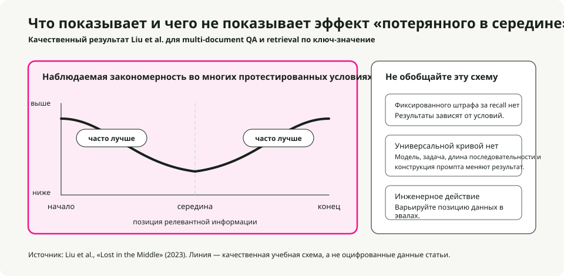
# Organize context with critical info at edges
[CURRENT TASK] # At start
- Goal: Generate quarterly report
- Deadline: End of week
[DETAILED CONTEXT] # Middle (less attention)
- 50 pages of data
- Multiple analysis sections
- Supporting evidence
[KEY FINDINGS] # At end
- Revenue up 15%
- Costs down 8%
- Growth in Region A
Инструкции, которые вы категорически не можете потерять, дублируйте и в начале, и в конце. Поскольку модели сильно смотрят на оба края, одна и та же инструкция в обеих позициях получит внимание независимо от длины контекста. Это правильный ход для системных ограничений, которые должны соблюдаться всегда, требований к формату вывода и safety policy.
# Example: Duplicating critical instructions
[SYSTEM - START]
CRITICAL: Always respond in JSON format. Never include PII.
[... long context with documents, history, tools ...]
[SYSTEM - REMINDER]
CRITICAL: Always respond in JSON format. Never include PII.
Отравление контекста
Отравление контекста — это ситуация, когда галлюцинации, ошибки или некорректная информация попадают в контекст и усиливаются через многократные ссылки на них. После отравления контекст создает feedback loops, которые укрепляют ложное убеждение.
Обычно это приходит через одну из трех дверей: tool outputs с ошибками или неожиданными форматами, retrieved documents с неправильной или устаревшей информацией и model-generated summaries, которые вносят галлюцинации и потом сохраняются.
Распознать это можно по симптомам: деградация качества на задачах, которые раньше проходили успешно; агент вызывает не те инструменты или передает не те параметры; устойчивые галлюцинации не исчезают после попыток исправления.
Восстановление механическое. Обрежьте контекст до точки перед отравлением, явно пометьте факт отравления и запросите переоценку либо перезапустите с чистым контекстом, сохранив только проверенную информацию.
Отвлечение контекста
Отвлечение контекста возникает, когда контекст становится настолько длинным, что модель начинает чрезмерно фокусироваться на том, что вы ей дали, в ущерб тому, чему она научилась при обучении. Исследования показывают, что даже один нерелевантный документ снижает качество на задачах с релевантными документами [8]. Эффект работает как step function — сам факт наличия distractor уже вызывает деградацию.
Ключевое наблюдение: модели не умеют пропускать нерелевантный контекст. Они вынуждены уделять внимание всему, что им дали, и само это внимание уже становится отвлекающим фактором, даже если нерелевантная информация явно бесполезна.
Смягчение — это relevance filtering перед загрузкой документов, namespacing, чтобы нерелевантные секции было проще игнорировать, и вопрос о том, действительно ли информация должна находиться в контексте или ее лучше получать через tool call.
Путаница контекста
Путаница контекста — это когда нерелевантная информация начинает влиять на ответы так, что качество ухудшается. Если вы поместили что-то в контекст, модель обязана уделить этому внимание, а значит, может включить нерелевантную информацию, использовать определения инструментов для другой задачи или применить ограничения из другого контекста.
На что смотреть: ответы, которые бьют не по тому аспекту запроса; tool calls, которые выглядели бы правильно для другой задачи; вывод, смешивающий требования из нескольких источников.
Исправление — явная сегментация задач (разные задачи получают разные окна контекста), четкие переходы между контекстами и state management, изолирующий контекст.
Конфликт контекста
Конфликт контекста возникает, когда накопленная информация начинает прямо противоречить сама себе, создавая взаимоисключающие указания. Это отличается от отравления, где неверен один фрагмент — при конфликте несколько корректных фрагментов противоречат друг другу.
Типовые источники: multi-source retrieval с противоречивой информацией, конфликты версий (устаревшая и актуальная информация одновременно в контексте) и конфликты перспектив (валидные, но несовместимые точки зрения).
Разрешение: явная пометка конфликта, правила приоритета источников и фильтрация по версиям, исключающая устаревшую информацию.
Пороги деградации, зависящие от модели
Исследования дают конкретные данные о том, когда начинается деградация. Эффективная длина контекста — где модели сохраняют оптимальную производительность — часто существенно меньше заявленного максимума [3]:
| Модель | Макс. контекст | Эффективный контекст | Примечания по деградации |
|---|---|---|---|
| GPT-4 Turbo | 128K tokens | ~32K tokens | Retrieval ухудшается после 32K, точность падает после 64K |
| GPT-4o | 128K tokens | ~8K tokens | Точность на сложном NIAH падает с 99% до 70% на 32K |
| Claude 3.5 Sonnet | 200K tokens | ~4K tokens | Точность на сложном NIAH падает с 88% до 30% на 32K |
| Gemini 1.5 Pro | 1M tokens | ~128K tokens | 99% recall на NIAH при 1M, лучшая long-context performance |
| Gemini 2.0 Flash | 1M tokens | ~32K tokens | Точность на сложном NIAH падает с 94% до 48% на 32K |
Источники: benchmark RULER [3], benchmark NoLiMa [9], технические отчеты Google.
Ключевой вывод из RULER [3]: только 50% моделей, заявляющих 32K+ контекст, сохраняют удовлетворительную производительность на 32K токенах. Почти идеальные результаты на простых тестах needle-in-a-haystack не означают реального понимания длинного контекста — на задачах со сложным рассуждением деградация гораздо резче.
Стратегии сжатия контекста
Примечание по терминологии: context compression — это общий термин, который включает summarization (для истории диалога и памяти), observation masking (для выводов инструментов) и selective trimming [5]. Суммаризация памяти, упомянутая в разделе Память, — лишь одно из применений этих более общих стратегий сжатия.
Когда сессии агента начинают генерировать миллионы токенов истории, сжатие перестает быть опциональным. Наивный подход — агрессивно сжимать все, чтобы минимизировать число токенов в запросе. Правильная цель оптимизации — tokens per task [4]: суммарное число токенов, потраченных на завершение задачи, включая стоимость повторного получения данных, если сжатие потеряло что-то критичное.
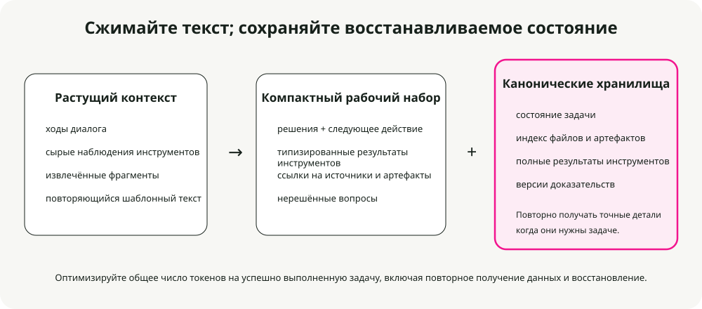
Когда нужно сжатие
Включайте сжатие, когда сессии агента превышают лимиты окна контекста, когда агент начинает «забывать», какие файлы он изменял, когда вы отлаживаете длинную coding-сессию, растянувшуюся на часы, или когда качество заметно деградирует в долгих разговорах.
Три production-ready подхода
Anchored iterative summarization поддерживает структурированное постоянное summary с явными секциями для цели сессии, изменений файлов, решений и следующих шагов. Когда срабатывает сжатие, суммаризуется только новый усеченный фрагмент, а затем он сливается с уже существующим summary. Это работает потому, что структура принуждает к сохранению важного: выделенные секции работают как чек-лист, который суммаризатор обязан заполнить, и это предотвращает тихий drift.
## Session Intent
Debug 401 Unauthorized error on /api/auth/login despite valid credentials.
## Root Cause
Stale Redis connection in session store. JWT generated correctly but session could not be persisted.
## Files Modified
- auth.controller.ts: No changes (read only)
- config/redis.ts: Fixed connection pooling configuration
- services/session.service.ts: Added retry logic for transient failures
- tests/auth.test.ts: Updated mock setup
## Test Status
14 passing, 2 failing (mock setup issues)
## Next Steps
1. Fix remaining test failures (mock session service)
2. Run full test suite
3. Deploy to staging
Opaque compression создает сжатые представления, оптимизированные под точность реконструкции. Она дает максимальные коэффициенты сжатия (99%+), но жертвует интерпретируемостью. Используйте ее там, где важна максимальная экономия токенов и повторный fetch дешев.
Regenerative full summary генерирует подробное структурированное summary при каждом сжатии. Результат читаем, но детали могут деградировать по мере повторных циклов сжатия.
Сравнение сжатия
Исследование Factory.ai [4] сравнивало стратегии сжатия на реальных production-сессиях агентов:
| Метод | Коэффициент сжатия | Оценка качества | Лучше всего подходит для |
|---|---|---|---|
| Anchored Iterative | 98.6% | 3.70/5 | Длинные сессии, трекинг файлов |
| Regenerative | 98.7% | 3.44/5 | Четкие фазовые границы |
| Opaque | 99.3% | 3.35/5 | Максимальная экономия, короткие сессии |
Как читать метрики:
- Коэффициент сжатия (98.6%): процент удаленных токенов. Коэффициент 98.6% означает, что из 100,000 токенов истории остается только 1,400.
- Оценка качества (3.70/5): измеряется через probe-based evaluation — после сжатия агенту задают вопросы, требующие вспомнить конкретные детали из усеченной истории (какие файлы мы меняли, какое было сообщение об ошибке). 3.70/5 означает, что агент правильно ответил примерно на 74% таких probes.
- 0.7% дополнительных токенов: если сравнить anchored iterative (98.6%) и opaque (99.3%), разница составляет 0.7%. Для сессии на 100K токенов это 1,400 токенов против 700. Эти дополнительные 700 токенов (0.7% исходного объема) покупают 0.35 пункта качества (3.70 против 3.35) — то есть заметно лучшую сохранность критичных для задачи деталей.
Проблема следа артефактов
Целостность artifact trail — самое слабое измерение у всех методов сжатия: 2.2–2.5 из 5.0. Coding-агенты должны знать, какие файлы они создали, изменили или прочитали, а сжатие часто теряет именно это.
Рекомендация: поверх общей суммаризации внедрите отдельный индекс артефактов или явный tracking состояния файлов в scaffolding агента.
Стратегии триггера сжатия
| Стратегия | Точка срабатывания | Компромисс |
|---|---|---|
| Fixed threshold | 70-80% использования | Просто, но может сжимать слишком рано |
| Sliding window | Держать последние N ходов + summary | Предсказуемый размер контекста |
| Importance-based | Сначала сжимать low-relevance | Сложно, но лучше сохраняет сигнал |
| Task-boundary | Сжимать при завершении задач | Чистые summary, непредсказуемый тайминг |
Probe-based evaluation
Традиционные метрики вроде ROUGE не отражают функциональное качество сжатия. Summary может иметь высокий lexical overlap и при этом потерять единственный file path, который агенту реально нужен.
Probe-based evaluation измеряет качество напрямую, задавая вопросы после сжатия:
| Тип probe | Что проверяет | Пример вопроса |
|---|---|---|
| Recall | Сохранение фактов | "What was the original error message?" |
| Artifact | Трекинг файлов | "Which files have we modified?" |
| Continuation | Планирование задачи | "What should we do next?" |
| Decision | Цепочку рассуждений | "What did we decide about the Redis issue?" |
Если сжатие сохранило правильную информацию, агент отвечает правильно. Если нет — он начинает гадать или галлюцинировать.
Техники оптимизации контекста
Оптимизация контекста расширяет эффективную емкость через compression, masking, caching и partitioning. Эти техники опираются на Стратегии сжатия контекста выше и системно применяют их в production. При грамотной реализации оптимизация может вдвое или втрое увеличить эффективную емкость контекста без перехода на более крупную модель.
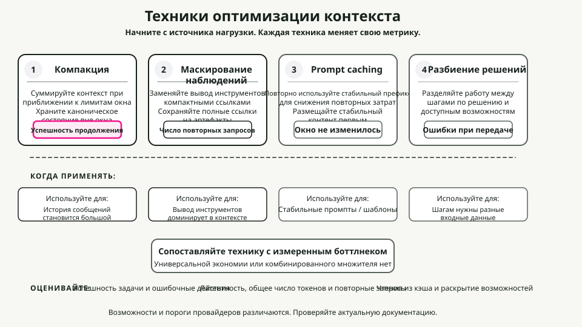
Стратегии compaction
Compaction суммаризует содержимое контекста при приближении к лимитам, а затем переинициализирует сессию с этим summary. Смысл в том, чтобы дистиллировать содержимое с высокой точностью, чтобы агент мог продолжать работать с минимальной деградацией.
Порядок приоритетов у меня такой: сначала сжимать выводы инструментов (заменять их summary), затем старые ходы диалога (суммаризовать раннюю часть разговора), затем извлеченные документы (суммаризовать, если доступны более свежие версии). System prompt не сжимать никогда.
Что сохранять, зависит от типа. Tool outputs: оставляйте findings, metrics, conclusions; выбрасывайте сырой многословный вывод. Ходы диалога: оставляйте решения, обязательства и смены контекста; выбрасывайте filler. Извлеченные документы: оставляйте ключевые факты и утверждения; выбрасывайте поддерживающие подробности.
Observation masking
Tool outputs могут составлять более 80% потребления токенов [4]. После того как агент использовал вывод инструмента для принятия решения, держать полный вывод в контексте становится все менее полезно.
Матрица решений для masking:
| Категория | Действие | Обоснование |
|---|---|---|
| Наблюдения текущей задачи | Никогда не маскировать | Критично для текущей работы |
| Самый недавний ход | Никогда не маскировать | Немедленно релевантно |
| Активное рассуждение | Никогда не маскировать | Мысль еще в процессе |
| 3+ ходов назад | Рассмотреть masking | Назначение уже, вероятно, выполнено |
| Повторяющиеся выводы | Всегда маскировать | Избыточно |
| Boilerplate | Всегда маскировать | Низкий сигнал |
Оптимизация KV-cache
KV-cache хранит тензоры Key и Value, вычисленные во время inference. Кэширование между запросами с одинаковыми префиксами позволяет избежать повторных вычислений, что резко снижает стоимость и latency.
Оптимизируйте под кэш, размещая стабильный контент первым:
# Stable content first (cacheable)
context = [system_prompt, tool_definitions]
# Frequently reused elements
context += [reused_templates]
# Unique elements last
context += [unique_content]
Проектируйте под стабильность кэша: избегайте динамических данных вроде timestamps в prompts, используйте консистентное форматирование и держите структуру стабильной между сессиями.
Partitioning контекста
Самая агрессивная оптимизация — partitioning работы между sub-agents с изолированными контекстами. Каждый sub-agent работает в чистом контексте, сфокусированном на своей подзадаче, без накопленного контекста из других подзадач.
Для агрегации: проверьте, что все partitions завершились, объедините совместимые результаты и суммаризуйте, если итоговый вывод все еще слишком велик.
Фреймворк принятия решений по оптимизации
Когда оптимизировать: если использование контекста превышает 70%, качество ответов деградирует в длинных разговорах, стоимость ползет вверх из-за длинных контекстов или latency растет с длиной диалога.
Что применять, зависит от доминирующего компонента. Если доминируют tool outputs — нужен observation masking. Если доминируют извлеченные документы — нужна summarization или partitioning. Если доминирует история сообщений — нужен compaction с summarization. Если доминируют несколько компонентов — комбинируйте стратегии.
Разумные целевые метрики: для compaction — сокращение токенов на 50–70% при деградации качества менее 5%; для masking — 60–80% сокращения в замаскированных наблюдениях; для cache optimization — hit rate 70%+ на стабильных нагрузках.
Как это приготовить (пошагово)
Практический рецепт для контекстного слоя. Начинайте просто и добавляйте сложность только тогда, когда что-то ломается.
Шаг 1: напишите контракт
Определите, что ваш агент обязан делать и как он должен себя вести. Запишите policy системного уровня (роль, ограничения, safety-правила) и guidelines уровня developer (формат вывода, тон, требования к цитированию). Определите JSON Schema для всех форм вывода: AnswerSchema, PlanSchema, StepResultSchema.
Шаг 2: выберите стратегию retrieval
Начните с hybrid retrieval (BM25 plus vector) и reranker. Затем маршрутизируйте по типу запроса. Для общих знаний retrieval не нужен. Для свежих или приватных фактов нужен single-shot RAG (hybrid plus rerank). Для сложных составных запросов нужен iterative RAG (разбить на подзапросы).
Шаг 3: спроектируйте память
Разделите short-term (состояние разговора) и long-term (факты о пользователе, история). Short-term хранит состояние разговора и последние несколько ходов, затем очищается в конце сессии. Long-term хранит пользовательские сущности, предпочтения и эпизодические события. Задайте правила истечения: предпочтения — 365 дней, эпизоды — 90 дней, short-term — только на время сессии. Перед сохранением чего-либо добавьте редактирование PII.
Шаг 4: специфицируйте инструменты
Определите четкие сигнатуры инструментов вместе с валидацией и fallback-стратегиями. Для каждого инструмента напишите ясный docstring, входную схему и выходную схему. Отметьте, является ли он idempotent. Определите postconditions и fallback chain. Валидируйте аргументы инструмента по схеме до вызова.
Шаг 5: установите guardrails
Добавьте валидацию входа и выхода, safety-фильтры и enforcement policy. Минимальный чек-лист:
- [ ] Редактировать PII (emails, SSNs, credit cards) до обработки.
- [ ] Валидировать все outputs по JSON Schema.
- [ ] Блокировать попытки prompt injection.
- [ ] Ограничивать частоту вызовов инструментов.
- [ ] Логировать все нарушения policy для аудита.
Шаг 6: добавьте observability и evals
Инструментируйте контекстный слой так, чтобы его можно было отлаживать. Трейсите, какие источники контекста были загружены; счетчики токенов (input, output, cost); метрики retrieval (query, top-k, процитированные источники); tool calls (какие инструменты, аргументы, результаты, сбои); и срабатывания guardrails (блокировки входа, исправления выхода, policy-отказы).
Самые важные метрики — exactness (валидность схемы, цель 99%+), groundedness (доля ответов с цитатами, цель 90%+ для knowledge-запросов), latency (цель — менее 2s p95) и cost (цель — менее $0.05 на запрос).
Шаг 7: итерируйте
Добавляйте продвинутые паттерны только тогда, когда упираетесь в реальные ограничения. Добавляйте reflections, когда error rate превышает 5%. Добавляйте planners, когда задачи регулярно требуют больше трех последовательных шагов. Добавляйте sub-agents, когда у вас появляются разные домены, которым нужны изолированные контексты.
Антипаттерны
Распространенные ошибки, которые убивают agentic-системы. Избегайте их.
1. Stuff-the-window
Засовывать в контекст на каждый запрос все возможные документы, память и примеры. Результат — context rot: соотношение signal-to-noise рушится, и вы одновременно активируете все паттерны деградации. Подробности про distraction и confusion см. в Паттерны деградации контекста. Исправление — адаптивная маршрутизация плюс compression и masking. См. Техники оптимизации контекста.
2. Невалидированные результаты инструментов
Агент вызывает инструмент, получает данные и сразу скармливает их модели без проверки. Неправильный формат ломает downstream-логику. Null-результаты вызывают галлюцинации. Это один из основных векторов для Отравления контекста. Всегда валидируйте результаты инструментов по схеме и postconditions.
3. One-shot everything
System policy, developer guidelines, примеры, пользовательский запрос, память и знания — все запихнуто в один монолитный prompt. Никакого разделения ответственности. Окно контекста забивается дублирующимся boilerplate. Разделяйте долговечные инструкции и контекст, специфичный для шага, и используйте паттерны Оптимизации KV-cache, описанные выше.
4. Неограниченная память
Хранить все пользовательские взаимодействия вечно и загружать их целиком на каждый запрос. Контекст заполняется устаревшими и нерелевантными воспоминаниями, а вы бесплатно получаете privacy-риск. См. феномен lost-in-middle, чтобы понять, почему содержимое середины все равно игнорируется. Задавайте политики retention, внедряйте scoped retrieval и редактирование PII.
5. RAG везде
Извлекать документы для каждого запроса, даже для "What is 2+2?" или "Hello." Это тратит latency и деньги, а retrieval вносит шум, который запускает Отвлечение контекста. Реализуйте adaptive RAG routing через классификатор или небольшой набор эвристик.
6. Игнорирование срабатываний guardrails
Вы логируете нарушения guardrails, но никогда их не просматриваете. Реальные атаки проходят мимо. Реальные UX-проблемы остаются незамеченными. Исправления схемы не должны происходить часто — если происходят, инструкции у вас неясные. Просматривайте срабатывания guardrails еженедельно.
7. Нет evals
Вы поставляете изменения контекстного слоя без тестирования. Получаете тихие регрессии и отсутствие способа объективно сравнивать варианты. Перед релизом определите пять-десять eval-сценариев, гоняйте их на каждом изменении и используйте probe-based evaluation, чтобы ловить проблемы качества сжатия.
Быстрые победы: внедрите это сегодня
Если у вас уже есть агент в production и вы хотите быстро улучшить ситуацию, начните отсюда. Каждое из этих изменений занимает меньше дня.
1. Добавьте валидацию выходной схемы
Это перехватывает большинство ошибок до того, как они дойдут до пользователя.
from jsonschema import validate, ValidationError
def validate_output(output: dict) -> dict:
try:
validate(instance=output, schema=ANSWER_SCHEMA)
return output
except ValidationError as e:
repaired = auto_repair(output, e)
validate(instance=repaired, schema=ANSWER_SCHEMA)
return repaired
2. Добавьте базовый tracing
Когда что-то ломается, отладка становится заметно быстрее.
logger.info(json.dumps({
"request_id": request_id,
"query": query,
"context_loaded": {"instructions": True, "memory": True, "knowledge": True},
"tokens": {"input": 1200, "output": 150},
"latency_ms": 1120,
"result": "success"
}))
3. Разделите system- и user-сообщения
Это заметно снижает расход токенов за счет Оптимизации KV-cache.
messages = [
{"role": "system", "content": SYSTEM_POLICY + DEVELOPER_GUIDELINES},
{"role": "user", "content": f"Query: {query}\nMemory: {memory}\nKnowledge: {knowledge}"}
]
4. Добавьте требования к цитированию
Это повышает доверие, упрощает аудит и снижает галлюцинации.
5. Настройте срок жизни памяти
Это предотвращает загрязнение контекста и privacy-риски.
def load_memory(customer_id: str) -> dict:
entries = db.get_memory(customer_id)
now = datetime.now()
return {
k: v for k, v in entries.items()
if v.get("expires_at", now) > now
}
Заключение
Контекстная инженерия — это дисциплина, которая отделяет демо-агентов от production-агентов. Модель не стала хуже — хуже стал контекст. Четыре ключевых рычага, которые стоит понимать: основы (контекст конечен, внимание ограничено, progressive disclosure — это unlock), паттерны деградации (lost-in-middle, poisoning, distraction, confusion, clash), сжатие (tokens-per-task важнее tokens-per-request, структурированные summary) и оптимизация (compaction, masking, caching, partitioning).
Начните с быстрых побед. Добавляйте сложность только тогда, когда упираетесь в реальные ограничения. И измеряйте все — нельзя улучшить то, что вы не trace'ите.
В этой статье использован контент из коллекции Agent Skills for Context Engineering — набора переиспользуемых модулей знаний для создания более качественных AI-агентов.
References
-
Liu, N. F., Lin, K., Hewitt, J., Paranjape, A., Bevilacqua, M., Petroni, F., & Liang, P. (2023). "Lost in the Middle: How Language Models Use Long Contexts." arXiv preprint arXiv:2307.03172. https://arxiv.org/abs/2307.03172
- Ключевой вывод: recall accuracy для информации в середине контекста на 10–40% ниже, чем в начале и конце.
-
Xiao, G., Tian, Y., Chen, B., Han, S., & Lewis, M. (2023). "Efficient Streaming Language Models with Attention Sinks." ICLR 2024. https://arxiv.org/abs/2309.17453
- Вводит феномен "attention sink", при котором LLM непропорционально много внимания выделяют начальным токенам.
-
Hsieh, C. Y., et al. (2024). "RULER: What's the Real Context Size of Your Long-Context Language Models?" COLM 2024. https://arxiv.org/abs/2404.06654
- Ключевой вывод: только 50% моделей, заявляющих 32K+ контекст, сохраняют удовлетворительную производительность на 32K токенах.
-
Factory.ai Research. (2025). "Evaluating Context Compression for AI Agents." https://www.factory.ai/blog/evaluating-context-compression
- Источник для сравнений стратегий сжатия, оптимизации tokens-per-task и методологии probe-based evaluation.
-
Li, Y., et al. (2023). "Compressing Context to Enhance Inference Efficiency of Large Language Models." EMNLP 2023.
- Исследование selective context pruning с использованием метрик self-information.
-
Anthropic. (2024). "Model Context Protocol (MCP) Specification." https://modelcontextprotocol.io/
- Официальная спецификация стандарта MCP для интеграции AI и инструментов.
-
LangChain/LangGraph. (2024). "How to add memory to the prebuilt ReAct agent." https://langchain-ai.github.io/langgraph/how-tos/create-react-agent-memory/ — Показывает, что summarization — один из методов управления памятью в пределах ограничений контекста.
-
Yoran, O., Wolfson, T., Bogin, B., Katz, U., Deutch, D., & Berant, J. (2024). "Making Retrieval-Augmented Language Models Robust to Irrelevant Context." ICLR 2024. https://arxiv.org/abs/2310.01558
- Ключевой вывод: даже один нерелевантный документ может заметно ухудшить качество RAG, создавая "distracting effect".
-
Maekawa, S., et al. (2025). "NoLiMa: Long-Context Evaluation Beyond Literal Matching." ICML 2025. https://arxiv.org/abs/2502.05167
- Ключевой вывод: эффективный контекст GPT-4o — около 8K токенов, Claude 3.5 Sonnet — около 4K токенов, если требуется латентное рассуждение (в отличие от literal matching). На 32K токенах GPT-4o падает с 99.3% до 69.7% точности.
Дополнительные ресурсы
- Anthropic Claude Documentation: лучшие практики работы с long-context
- OpenAI Cookbook: стратегии управления окнами контекста
- LangChain Documentation: паттерны памяти и retrieval
- LlamaIndex Documentation: стратегии RAG и chunking